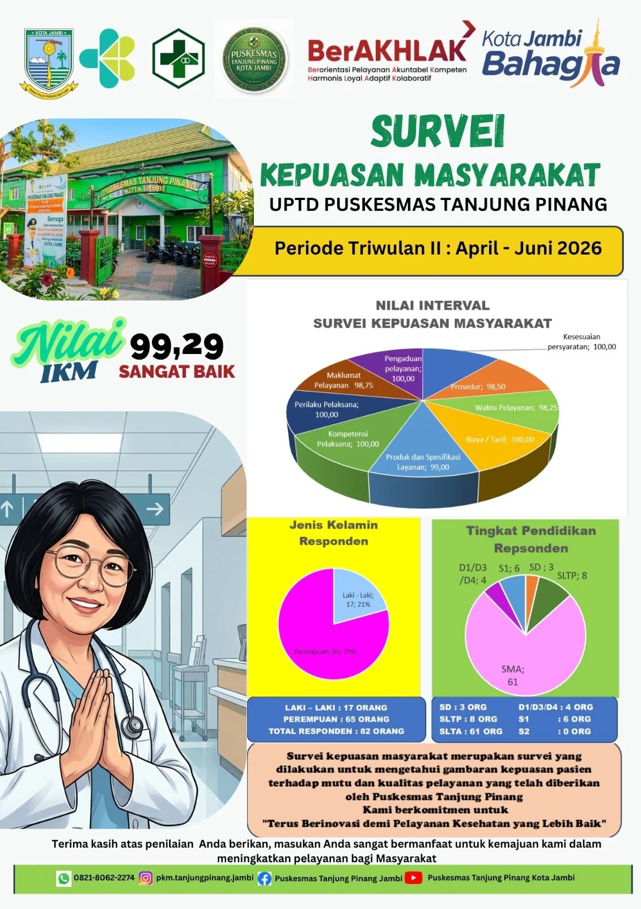
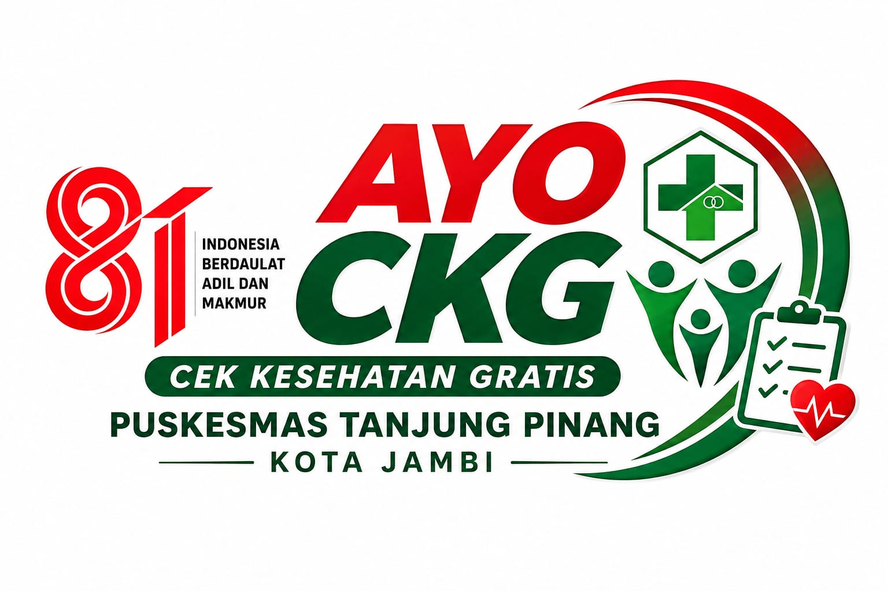
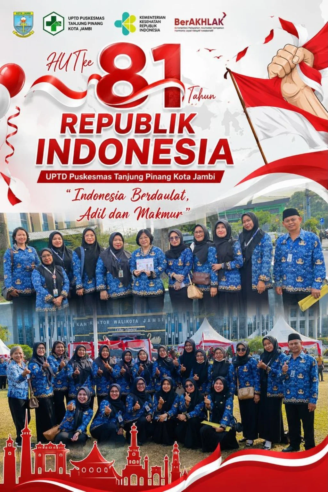
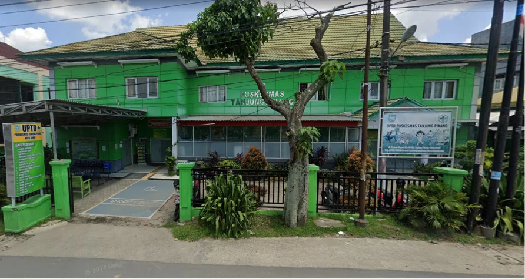
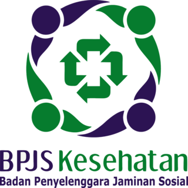
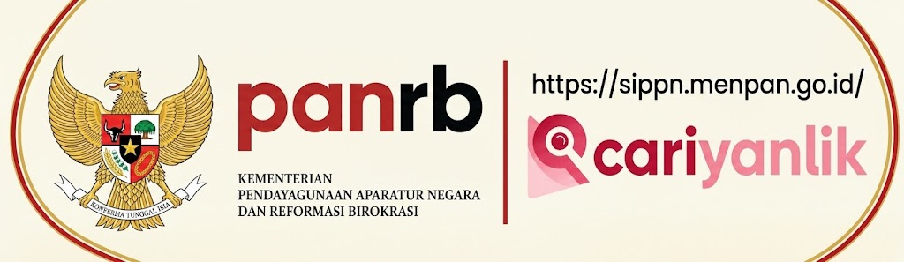

Integrasi Layanan Primer (ILP) Layanan Kesehatan Primer Terintegrasi untuk Keluarga
UPTD Puskesmas Tanjung Pinang menghadirkan pelayanan kesehatan primer yang berorientasi pada siklus hidup, promotif dan preventif, serta terintegrasi dengan jejaring pelayanan primer untuk menjawab kebutuhan masyarakat.
Menuju Masyarakat Kota Jambi yang Sehat dan Bahagia Tahun 2029
*Gambaran wilayah dan jumlah penduduk bersumber dari Profil UPTD Puskesmas Tanjung Pinang Kota Jambi Tahun 2025.

Apa yang Anda butuhkan?
Temukan jalur yang paling sesuai dengan kebutuhan Anda.
📢 Pengumuman


📸 Galeri Terbaru
Lihat semua ›📰 Berita & Kegiatan
Media sosial ›
Kenali layanan kami
Jelajahi layanan berdasarkan kebutuhan dan susunan klaster Puskesmas.
Informasi di beranda bersifat ringkas. Detail alur, persyaratan, jadwal, tarif, dan ketentuan pelayanan dapat dilihat pada halaman layanan terkait dan mengikuti standar serta SOP yang berlaku.
Video & Kegiatan Puskesmas
Tonton informasi dan dokumentasi kegiatan melalui kanal YouTube resmi kami.
PORTAL LAYANAN PUBLIK RESMI
Akses cepat menuju portal pemerintah dan lembaga terkait untuk informasi, layanan, dan pengaduan.

Kota JambiPortal resmi informasi dan layanan Pemerintah Kota Jambi.Kunjungi → KemenPAN-RBInformasi kebijakan reformasi birokrasi dan pelayanan publik.Kunjungi → RENBUT
KemenkesPortal Rencana Kebutuhan Terintegrasi Kementerian Kesehatan.Kunjungi → Ayo CKG
KemenkesInformasi Program Cek Kesehatan Gratis dari Kementerian Kesehatan.Kunjungi →

Skrining BPJSAkses layanan skrining dan informasi peserta sesuai kanal BPJS Kesehatan.Kunjungi → BPJSKesehatanInformasi layanan, program, dan hak peserta BPJS Kesehatan.Kunjungi → SP4N-LAPOR!Sampaikan aspirasi dan pengaduan untuk perbaikan pelayanan publik.Kunjungi →

SIPPNKemenPANRBStandar pelayanan, maklumat, dan informasi layanan Puskesmas.Kunjungi →